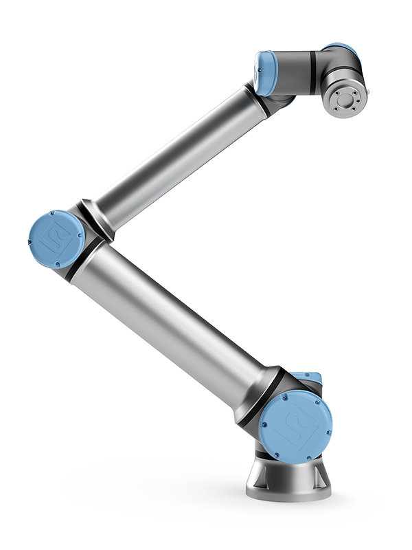
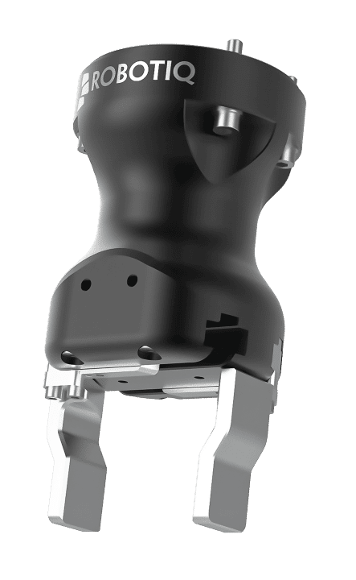
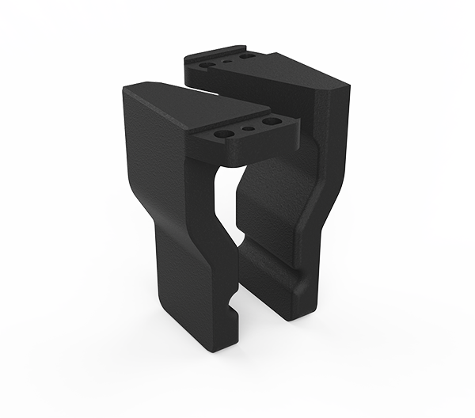
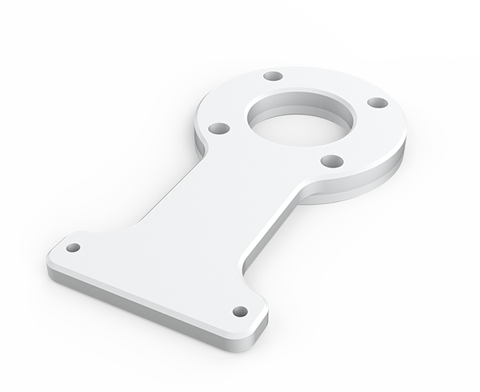
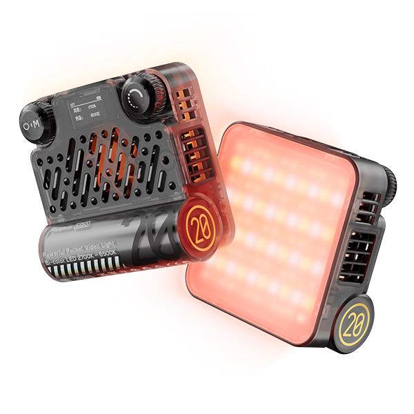

Robot Platform
The robot system used in the competition consists of a UR10e collebrative robot, a Robotiq Hand-E gripper, a pair of 3D-printed fingertips, a Realsense D435i RGB-D camera, a camera bracket, and a ZHIYUN FIVERAY M20 fill light.
| Equipment | Image | Description |
|---|---|---|
| UR10e Cobot |  | The UR10e cobot is mounted with the table and controlled through the real-time data exchange (RTDE) interface by the laptop. |
| Robotiq Hand-E gripper |  | The Hand-E gripper is mounted on the tool flange of the UR10e cobot and controlled via the Modbus RTU RS485 protocol. |
| 3D-printed fingertips |  | The fingertips are re-designed based on the original fingertips of the Robotiq Hand-E gripper to adapt to the competition tasks by adding grooves. They are 3D-printed with nylon (HP PA12). |
| Intel Realsense D435i camera |

|
The Realsense D435i RGB-D camera is mounted on the UR10e cobot through a bracket and connected to the laptop through a USB cable. |
| Camera bracket |  | The camera bracket is designed to mount the Realsense D435i RGB-D camera on the UR10e cobot. It is frabricated by CNC with Al6061. |
| ZHIYUN FIVERAY M20 fill light (Optinal) |  | The ZHIYUN FIVERAY M20 fill light is mounted on the camera to provide sufficient illumination. It is up to 2010 Lux (0.5m) and able to work for more than 40 minutes without charging. |